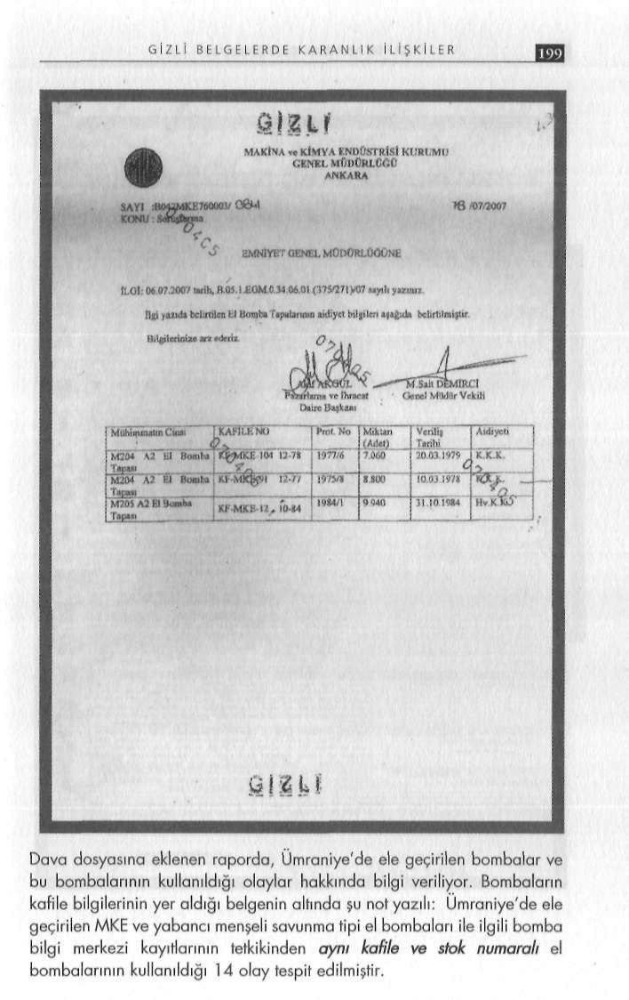

G İ Z L İ B E L G E L E R D E K A R A N L I K İ L İ Ş K İ L E R
si: Amerikan imalı olup NATO standartlarında üretiliyor, asıl Bu rapordan sonra Yıldırım'a "parmak izini" hatırlatan savcıdolgusu TNT-RDX patlayıcılardan oluşuyor.
lık, şu cevapla karşılaştı: "O parmak izlerinin nasıl olduğunu ha
- 2 adet üzerinde HGR DM 41 SPLÍTTER COMP-B LOS
tırlamıyorum."
FMP-16 ibaresi bulunan el bombası gövdesi: Alman imalı olup NATO standartlarında üretiliyor, asıl dolgusu TNT-RDX patla
O bombalar piyasada bulunmaz
yıcılardan oluşuyor.
Dört bomba uzmanı tarafından hazırlanan ekspertiz raporunun
- 1 adet üzerinde HGR DM 41 SPLITTER COMP-B LOS
"Netice ve kanaat" bölümünde ise söz konusu el bombalarının FMP-22 ibaresi bulunan el bombası gövdesi: Alman imali olup Türk (MKE), Amerikan ve Alman yapımı, NATO standartların
NATO standartlarında üretiliyor, asıl dolgusu TNT-RDX patlada askeri amaçlı üretildiği ve piyasada bulunmadığı belirtildi.
yıcılardan oluşuyor.
Raporun o bölümü:
- 1 adet üzerinde HGR DM 41 SPLÍTTER COMP-B LOS
"Yukarıda belirttiğimiz fabrikasyon MKE imali, ABD imali, FMP-24 ibaresi bulunan el bombası gövdesi: Alman imali olup Alman imali NATO standartlarında savunma tipi parça ve ba
NATO standartlarında üretiliyor, asıl dolgusu TNT-RDX patlasınç etkili el bombaları askeri amaçlar için üretilen mühimmatyıcılardan oluşuyor.
lardan olup piyasadan temininin mümkün olmadığı bilinmekte
- 9 adet siyah renkli her biri şeffaf koli bandı ile sarılı el bomdir. Bu tür mühimmatları çeşitli yollarla ele geçiren şahıslar bu bası saklama kabı.
mühimmatlar terör amaçlı veya şahsi menfaatler doğrultusunda kullanmaktadırlar.
Yıldırım'ın parmak izi
Bu tür el bombalarının piminin çekilerek ilgili hederlere atıl
Ümraniye'deki bu gecekonduda, hemen yanı başında manav masından sonra meydana gelen patlamadan dolayı canlılar üzerintezgâhı bulunan Ali Yiğit oturuyordu. 1.5 yıl önce bu eve yerleşde öldürücü, yaralayıcı, cansızlar üzerinde ise yakıcı, yıkıcı, tahrip mişti. Oktay Yıldırımla ilişkisi ise onun eski askeri olan dayısı edici özelliğe sahip olacağı fakat söz konusu el bombaları ihbar Mehmet Demirtaş aracılığıyla kurulmuştu. Hem emniyet hem üzerine kullanılmadan operasyon sonucu elde edildiğinden dolayı savcılıktaki sorgulamada; Oktay Yıldırım bu bombaların kendi
TCK'nın 174 ve TCK'nın 6136 sayılı kanuna 2478 sayılı kanunsine ait olmadığını öne sürdü, Mehmet Demirtaş bombalardan la eklenen Ek-5 maddesinde mütalaa edileceği kanaatindeyiz."
haberdar olmadığını iddia etti, ikisi birden suçu manav Ali Yi-
ğit'e attılar.
Yıldırım bombaları sahiplenmedi
Ancak, Emniyet Genel Müdürlüğü'nün ekspertiz raporunda, El bombalarının sahibi olduğu iddia edilen emekli astsubay materyaller üzerinde Yıldırım'ın parmak izi tespit edildi. Rapor
Oktay Yıldırım, 16 Haziran 2007 günü İstanbul Cumhuriyet da bu bölüm şöyle yer aldı: "...şeffaf bant yapışkan yüzeyinden Savcısı Fikret Seçen'e ifade verdi. Mesleğini "güvenlik şirketin
Çamlık Mahallesi, Bolelli Sitesi B-8 Çekmeköy-lstanbul adrede yöneticilik" olarak anlatan Yıldırım, bombaları üstlenmedi.
sinde ikamet eden Elazığ 1971 doğumlu Oktay Yıldırım'ın sağ el Bombaların bulunduğu evin hemen dibindeki manavı işleten işaret ve sol el işaret parmak izlerinin aynısı olduğu tespit edil
Ali Yiğit'i tanımadığını, dayısı Mehmet Demirtaş'ın Kilis'te astmiştir."
subaylık yaptığı dönemde yanında er olarak vatani görevini ye-
